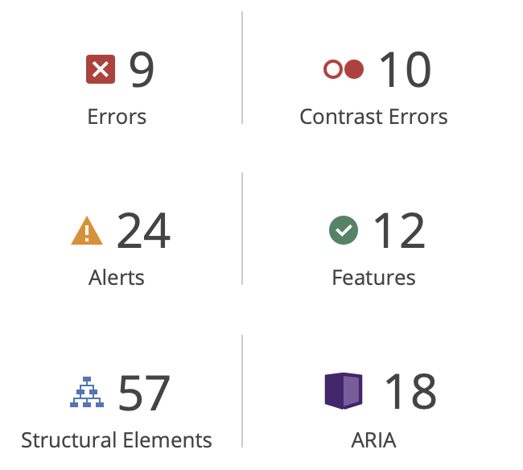
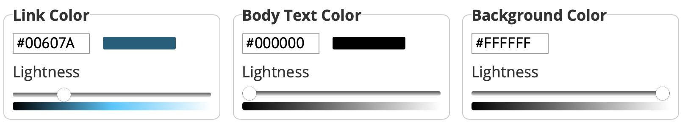

Evaluating Websites Against Accessibility Standards
Source - "Digital Divide"
"Wave Web Accessibility Evaluation Tool"
"WebAIM Text, Background and Link Checker"
Link to body text - 2.95:1 (FAIL)
Link to background - 7.1:1 (PASS)
Body text to background - 21:1 (PASS)
Record of Findings and Reflection
Critical Assessment of Multimedia Website
Reflective Statement
Learn About Closed Captions and Subtitles
Looked at "How to add subtitles and captions to a video", to see the differences between captions and subtitles. Also to use in my own video.
Generate and Implement a WebVTT File
Script - "Digital Video Edit"
Forms of Accessibility for my Multimedia Website